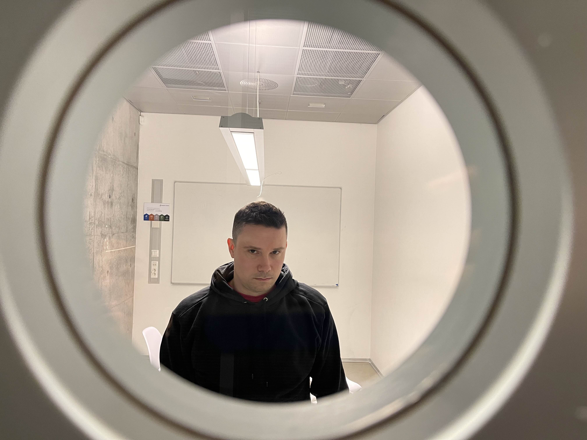

Martins oppvekst i Ski var stille og ensom. Mens andre lo og lekte, var han en observatør – ikke en deltaker.
Han følte seg usynlig.
Oversett.
Utenfor.
Mobbingen var tung å bære, men den vekket noe i ham
Et gnist
Som 12-åring kom redningen i form av en gammel datamaskin, kjøpt på loppemarked av faren. Her startet en reise som skulle forandre alt.
Gjennom koding oppdaget Martin en verden han kunne kontrollere. En verden uten mobbing. En verden der han følte seg
fri
En modig ny start
Etter videregående bestemte Martin seg for å begynne på nytt. I 2018 pakket håndkofferten og flyttet til Halden for å starte på bachelorstudiet i datateingeniør ved HiØF
"Det var skummelt å flytte så langt hjemmefra, men jeg visste at jeg trengte en ny start",
sier Andersen.
Han fullførte bacheloren i 2022, men ønsket å nå lenger. Et masterstudium fulgte, og i 2024 leverte han en oppgave som ble høyt verdsatt av både fagmiljøet og medstudenter.
Utover studiene fant Martin sin plass i studentmiljøet. Han gikk fra å være en ny student til en sentral skikkelse, kjent for sitt arbeid med å styrke fellesskapet og studentenes stemme.
Rolle/Arrangement: Bachelorstudent ved Høgskolen i Østfold
2022
Milepæl: Fullførte bachelorgrad
Rolle/Arrangement: Bachelor i datateknikk
Milepæl: Begynte på master i IT
Rolle/Arrangement: Masterstudent ved Høgskolen i Østfold
2024
Milepæl: Fullførte mastergrad i IT
Rolle/Arrangement: Mottok A-grad for masteroppgave
Milepæl: Studentleder ved Høgskolen i Østfold
Rolle/Arrangement: Ledet studentdemokratiet og representerte HiØF på nasjonalt nivå
Inkludering og lederskap – Essensen av studentlederrollen
"Halden ga meg en sjanse til å finne meg selv. Det var første gang jeg følte at jeg virkelig hørte hjemme et sted."
Under bachelorstudiet utmerket Martin seg både faglig og sosialt. Han ble kjent som en person som alltid stilte opp for andre – en egenskap som skulle bli hjørnesteinen i hans senere engasjement innen studentpolitikken.
På Høgskolen i Østfold fant han et inkluderende og støttende miljø. Han knyttet bånd til medstudenter som delte hans interesser, samtidig som han fikk inspirasjon fra forelesere som så potensialet i ham.
"Å være studentleder handler om å gi andre en stemme og sørge for at alle føler seg sett"
"En lydklipp fra Martin som forteller hvorfor han stilte til valg."
Martins Kamp for Studentenes Stemmer
Martins arbeidsdag er preget av både struktur og fleksibilitet, men den er også farget av en kamp som krever utholdenhet. Som studentleder kjemper han for bedre tilgang til psykisk helsehjelp for studentene, en sak som står ham nært. Det er en utfordring som krever både strategisk arbeid og emosjonell styrke, spesielt når han møter motstand fra et rigid system.
Dagen starter kl. 07:30 med en gjennomgang av kalenderen og forberedelser til dagens møter. Selv om han ofte gruer seg til å diskutere med ledelsen, finner han motivasjon i å vite at han representerer stemmer som ellers ikke ville bli hørt. "Det er tungt å kjempe for noe så viktig når du vet at forandring skjer sakte," sier han. "Men jeg kan ikke gi opp – det handler om menneskers liv."
Når han går rundt på campus for å snakke med studenter, føler han både press og håp. Noen ganger møter han studenter som deler personlige historier om hvor vanskelig det er å få hjelp. Han beskriver disse møtene som en blanding av smerte og drivkraft. "Det er de øyeblikkene som gjør at alt stresset er verdt det," sier han.
Ettermiddagene bringer ofte intense møter, hvor han jobber med å overbevise administrasjonen om å prioritere saken. Selv når han forlater møter uten konkrete resultater, går han ikke tomhendt – han tar med seg lærdommen og justerer strategien. "Du må lære å takle avslag uten å miste troen på at du kan få det til," forklarer han.

På de mest krevende dagene trekker Martin seg tilbake for å reflektere. "Når jeg føler meg utmattet, minner jeg meg selv på hvorfor jeg startet. For meg handler dette om mer enn en kamp for ressurser – det handler om å gi studentene håp."
Til tross for utfordringene, finner Martin styrke i små seire. Når en student forteller at noe han har kjempet for har gjort en forskjell, kjenner han en indre ro. "Det minner meg om at kampen er verdt det, uansett hvor vanskelig det kan være," sier han.
Martins A-oppgave innen bærekraftig teknologi for jordbruk viser hvordan innovasjon kan bidra til det grønne skiftet.
Martins masteroppgave, som fikk karakteren A, fokuserte på en IoT-basert overvåking av jordbærdyrking. Ved å kombinere sensorer og maskinlæringsalgoritmer, utviklet han et system som hjelper bønder med å opprettholde optimale vekstforhold for innendørs jordbær. Oppgaven hans bidrar til bærekraftig landbruk og det grønne skiftet.
Statistikk for ITI52020, 2024 VÅR, Masteroppgave og muntlig eksamen
Hvordan organiserte du arbeidet med oppgaven?
Jeg startet med en grundig planlegging og tidsplan. Jeg delte oppgaven inn i faser, som research, utvikling av systemet, testing og analyse.
Det hjalp meg å holde fokus og prioritere, slik at jeg kunne nå delmålene uten å miste oversikten
Var det noen utfordringer underveis, og hvordan løste du dem?
En av de største utfordringene var å håndtere store datamengder fra sensorene og få algoritmene til å tolke dem på en effektiv måte.
Jeg jobbet mye med datarensing og optimalisering, slik at systemet ble mer presist og mindre ressurskrevend
Hvor mye tid brukte du totalt på masteroppgaven?
Jeg brukte omtrent seks måneder på selve oppgaven, fra idéfasen til innlevering. Dette inkluderte alt fra research, utvikling, testing, og skriving. I gjennomsnitt jobbet jeg 20–30 timer per uke, men i de siste ukene før innlevering brukte jeg gjerne over 40 timer i uka for å få alt på plass
Daglig Rutine
07:00
Våkner opp og spiser frokost
08:00
Drar på forelesning/skole
17:00
Kommer fra skole, spiser mat og slapper av
21:00
Jobber mer med skole før han legger seg
Fremtiden – Hva nå for Martin?
Martins reise har vært alt annet enn enkel. Fra en stille barndom til å bli en stemme for andre, står han nå ved et veiskille.
Hva blir det neste?
Når vi spør Martin om hva fremtiden bringer, svarer han med et smil – men også med alvor. Han vet at suksess krever planlegging, men også vilje til å ta risiko.
Hva er neste steg?
"Jeg vil bygge videre på alt jeg har lært," sier Martin. "Teknologi og ledelse har alltid vært min lidenskap, og jeg ser for meg en rolle der jeg kan kombinere disse interessene for å skape noe som virkelig betyr noe."
For Martin handler det om mer enn ambisjoner. Det handler om
Han ønsker å gjøre en forskjell, ikke bare for seg selv, men for kommende generasjoner av studenter og samfunnsbyggere. "Studentdemokratiet har vist meg hvor mye kraft som ligger i samarbeid, og jeg vil bruke den kraften til å gjøre utdanning bedre for alle."
Har han noen råd til andre?
"Ikke vær redd for å feile," sier Martin bestemt. "Det er i feilene vi lærer mest. Og husk, ingen kan forandre verden alene. Samarbeid, lytt, og vær modig nok til å ta sjanser."
Fremtiden tilhører de som tør.
Martins historie minner oss om at selv de mest usynlige kan skinne når de finner sin lidenskap og retning. Veien videre er kanskje ukjent, men én ting er klart: Martin er klar for å fortsette å inspirere.